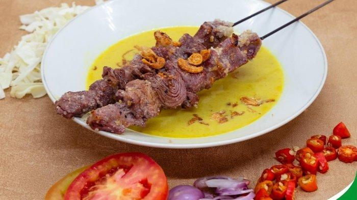

Gudeg
Gudeg di Dapoer Mama disajikan dengan cita rasa khas Yogyakarta yang manis dan gurih, dimasak perlahan menggunakan nangka muda pilihan serta bumbu rempah tradisional yang meresap sempurna. Dipadukan dengan santan kental, ayam, telur, dan sambal krecek, menu ini menghadirkan rasa autentik yang lezat dan menggugah selera.

Soto Ayam
Soto di Dapoer Mama disajikan dengan kuah hangat yang gurih dan kaya akan rempah pilihan, dipadukan dengan daging yang empuk serta pelengkap segar seperti tauge, seledri, dan bawang goreng. Perpaduan rasa yang khas membuat soto ini terasa lezat, hangat, dan cocok dinikmati kapan saja.

Sate Klathak
Sate Klathak di Dapoer Mama disajikan dengan potongan daging kambing yang empuk dan dibumbui sederhana menggunakan garam serta rempah pilihan, sehingga menghasilkan cita rasa gurih yang khas. Dibakar dengan teknik tradisional hingga matang sempurna, sate ini memiliki aroma menggugah selera dan cocok dinikmati dengan kuah gulai hangat khas Jogja.

Nasi Goreng
Nasi goreng di Dapoer Mama memiliki cita rasa gurih dan khas dengan perpaduan bumbu rempah yang pas. Disajikan hangat dengan tambahan telur, ayam, dan pelengkap segar, menu ini menghadirkan aroma menggugah selera serta rasa lezat yang cocok dinikmati kapan saja.